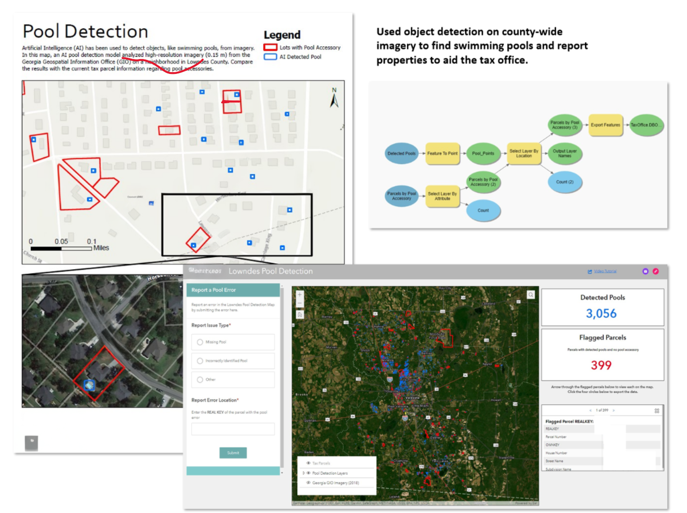
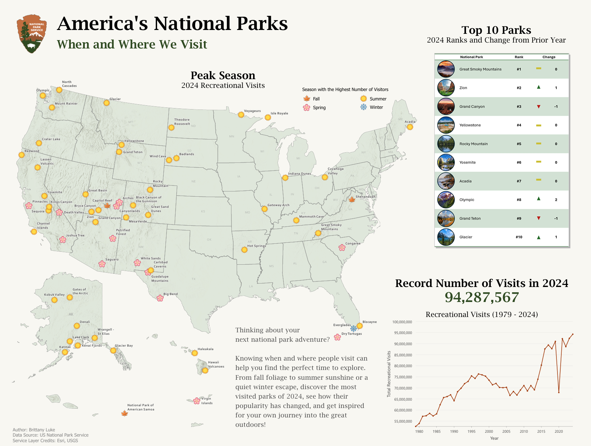

Work
Portfolio

Professional Projects
GIS Solutions & Analysis
Applied GIS projects for government agencies — drone mapping, GeoAI, dashboards, and web applications.

Cartography
Maps & Cartographic Design
Contest-winning maps, the 30 Day Map Challenge, and academic cartography work.

Web Maps
Interactive Web Maps
Web-based maps and applications built with Leaflet, ArcGIS Online, and more.